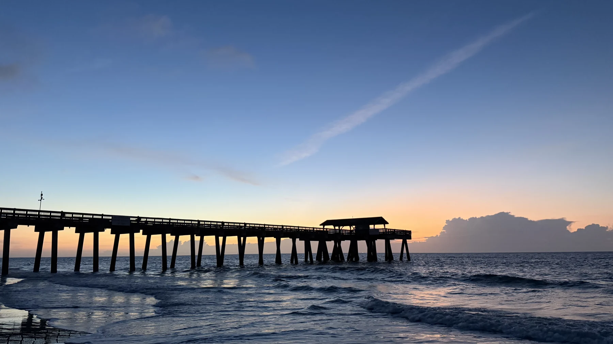
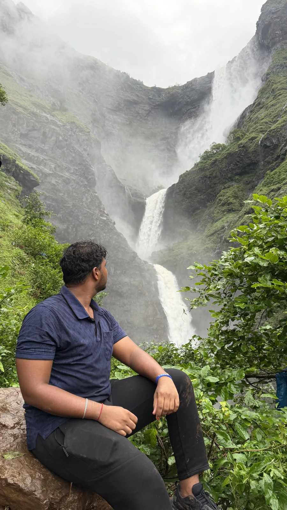
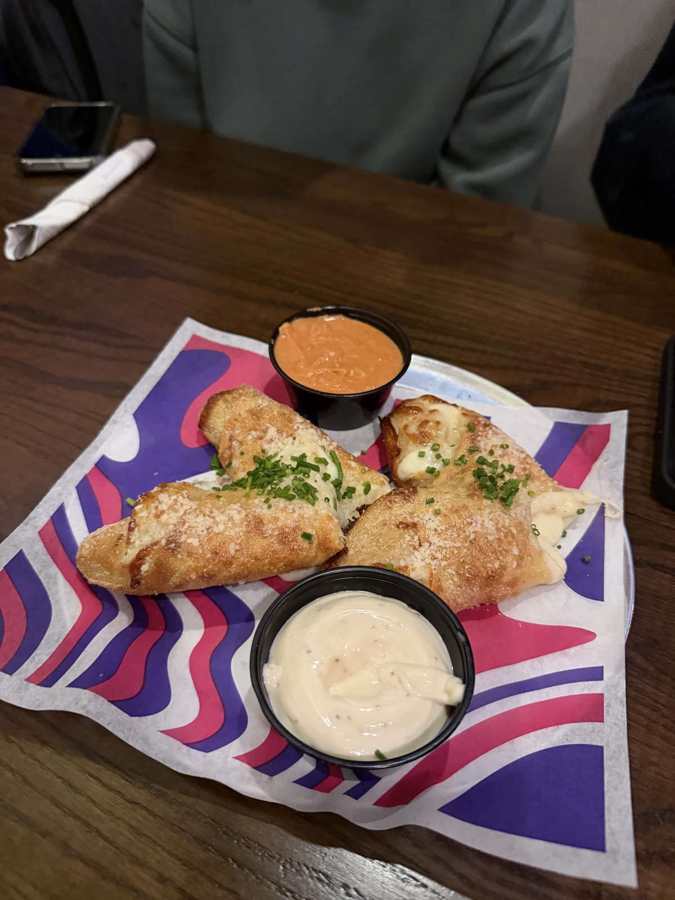
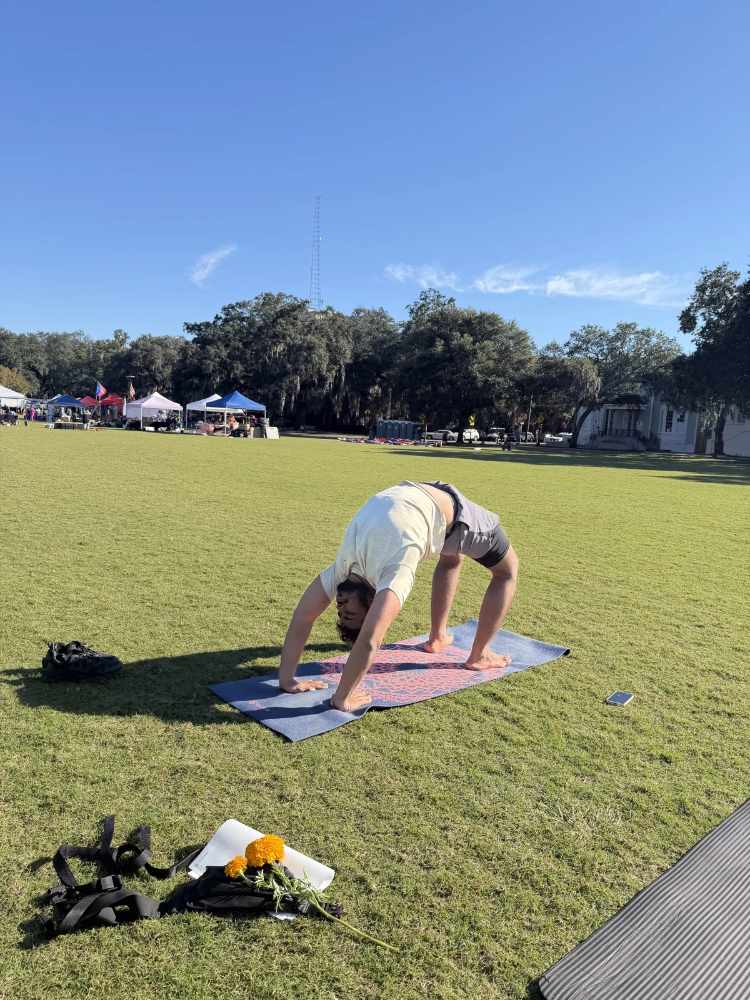
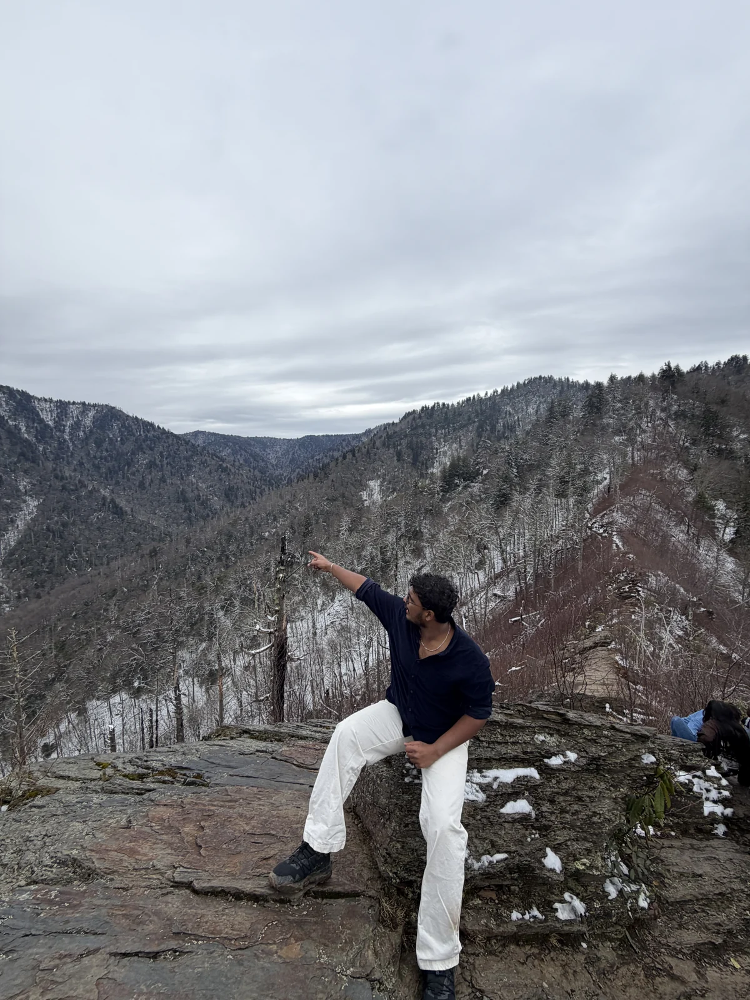
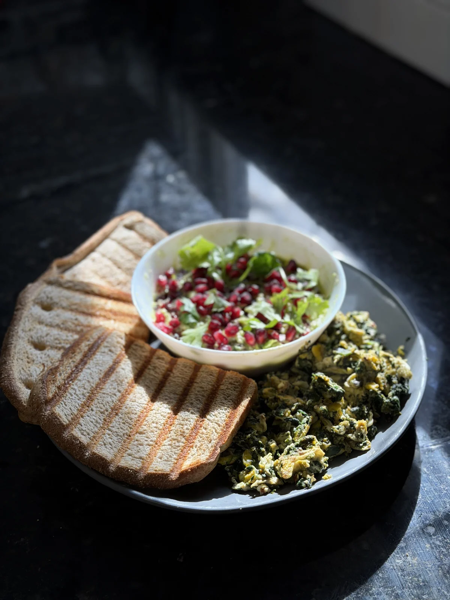
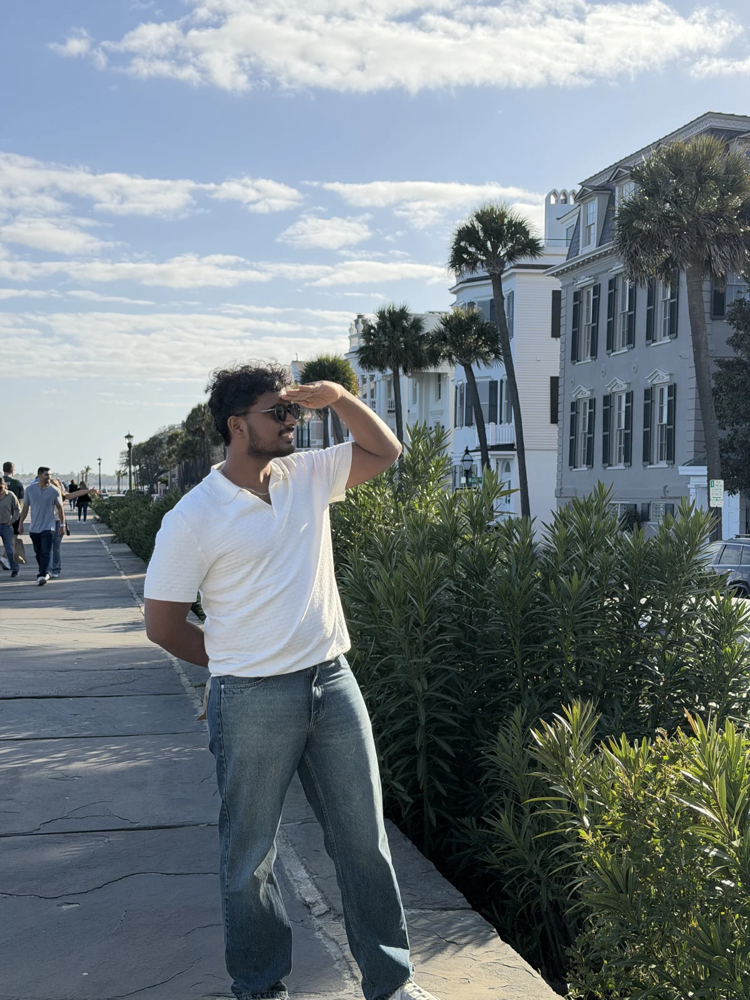
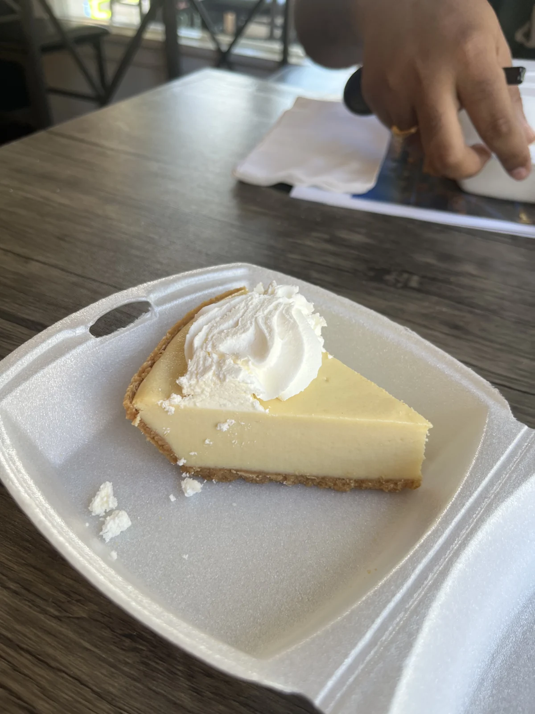
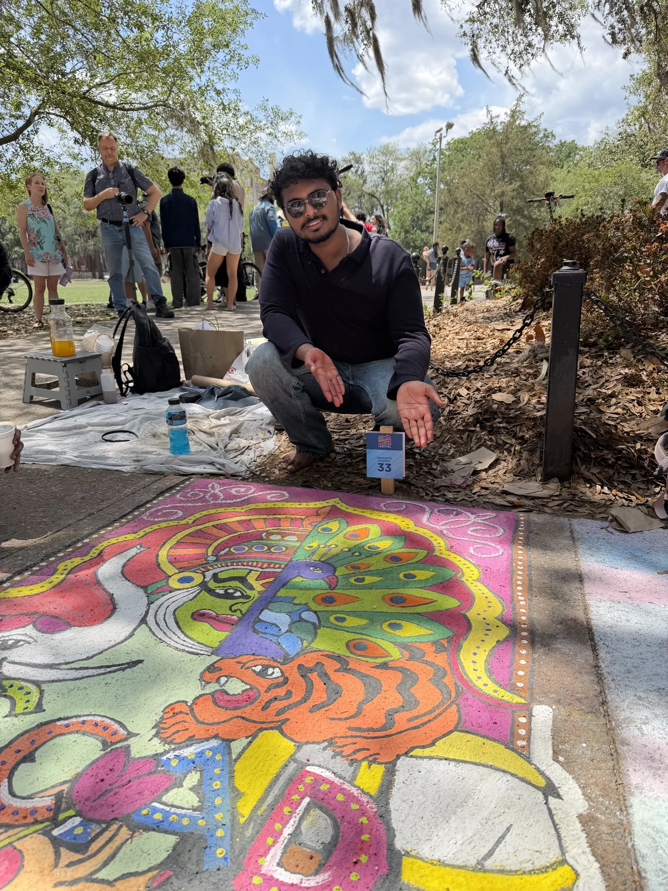

01 / PHOTO CHAPTERS — Clearest at a glance. Six short labels, generous photos. My recommendation.
Life outside the frame.
A little adventure. A new flavour. Something I haven’t tried before.

Photography & travel
Trekking & adventure
Cooking & new food Music & art
Music & art
Fitness & yoga02 / WEEKEND REEL — A compact, relaxed strip. Swipe across on a phone.
Off the clock. Still curious.
Travelling, cooking, tasting something new, and finding adventure in the everyday.
Photography & travelTrekking & adventureCooking & new foodMusic & artReadingFitness & yoga 03 / ONE MOMENT — The quietest option. One large photo, with your interests always visible.
Always curious.
Outside Unreal, there’s a whole world to explore.
Photography & travelTrekking & adventureCooking & new foodMusic & artReadingFitness & yoga
04 / CONTACT SHEET — Smallest footprint. A single row of moments and straightforward labels.
A few things I love.
New places, good food, and the joy of being a beginner.
05 / EDITORIAL MIX — One favourite moment anchors a compact mix of interests.
Out there. Trying things.
Travel & adventureCooking & new flavoursMusic & artReadingFitness & yoga 06 / EXPANDING FRAMES — Hover a photo to give it more space. Swipe the strip on mobile.
Follow my curiosity.
Places, flavours, and things I’m still learning.
PhotographyAdventureFoodMusic & artMovementReading 07 / TWO SIDES — A quieter composition: adventure outside, curiosity at home.
Away from the screen.

Out exploring · travel, photography & trekking
Back home · cooking, reading, music & artAnd somewhere in between: fitness, yoga, and trying something new.
08 / LOOSE MOMENTS — An informal photo strip with a single line of interests.
A life of little discoveries.
Travel · Photography · Food · Adventure · Music · Art · Reading · Movement


